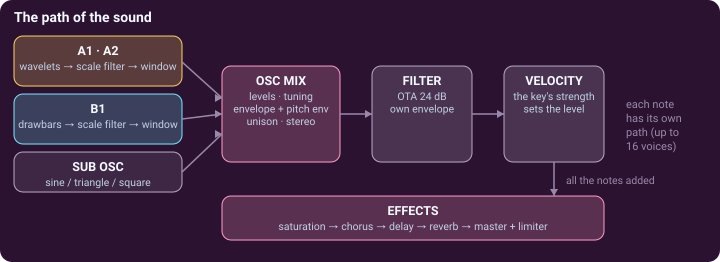
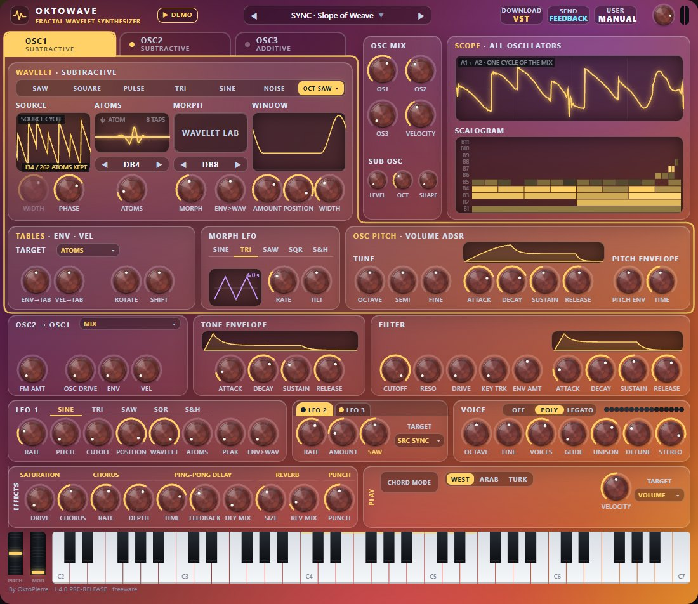

OKTOWAVE manual
Okto MultiWave Synth — a polyphonic synthesizer whose oscillators are built from wavelets. This page is the map; seven short pages explain the idea.
Start in one minute
In the browser
- Open the web app (Chrome or Edge).
- Click Play the synth, then ▶ DEMO in the header for a tour of the sounds (the welcome window's Play the demo on YouTube opens the video of the demo).
- Play the on-screen keyboard with the mouse, the keys 1…0 and A S D F…, or a MIDI keyboard. Z / X change the octave.
The idea, and the seven pages
A normal oscillator repeats one smooth wave. A wavelet is a tiny wave that starts, rings and fades. OktoWave cuts a cycle of sound into wavelet “atoms” in 11 octave bands, and lets you work on the bands: turn them down with a filter, draw them with drawbars, keep only the strongest, confine the effect to one part of the wave.
| Wavelets | The principle of the wavelet decomposition, and the idea of making an oscillator of it. |
|---|---|
| Subtractive | Oscillators A1 and A2: a classic wave cut into atoms, then filtered by size and by place. 1 · The oscillator · 2 · Filter and window · 3 · Making it move |
| Additive | Oscillator B1: eleven drawbars, one per band, with a pattern and an envelope for every band. 1 · Drawbars and patterns · 2 · Atoms and scalogram · 3 · Playing with the others |

The panel

The panel is the same in the browser and in the plug-in, except for a few buttons (listed under the table). From top to bottom:
| Header | The preset box (◀ ▶ step through the sounds, a click on the name opens the preset browser), MANUAL, the master volume knob and the level meter. The master volume is yours: it no longer changes with the preset, and every preset plays at the same loudness (it starts at 0 dB, with 6 dB of room above). The demo (a piece played as a tour of the presets): ▶ DEMO in the browser, ▶ PLAY DEMO in the plug-in (it leaves your sound as it was; a second click stops it). Browser only: DOWNLOAD VST and SEND FEEDBACK (a short form that opens in a new tab: a bug, an idea, a sound you miss). Plug-in only: SAVE PRESET and the window-size button. |
|---|---|
| OSC1 · OSC2 · OSC3 | The three folder tabs choose which oscillator's cards you see (OSC1 and OSC2 are the subtractive ones, A1 and A2 in this manual; OSC3 is the additive one, B1). They never change the sound: a lit dot says the oscillator is heard, and what you hear is set by OSC MIX. |
| WAVELET · SUBTRACTIVE | The heart of A1 and A2, in four columns: SOURCE (the wave, its cycle, WIDTH, PHASE), ATOMS (the wavelet, its atom, how many atoms are kept), MORPH (WAVELET 2, MORPH, ENV>WAV, and the small WAVELET LAB button) and WINDOW: a window that confines the wavelet filter to one part of the cycle (AMOUNT, POSITION, WIDTH). → Subtractive 1, Subtractive 2 |
| TABLES · ENV · VEL | Under the card of A1 and A2 (a gold frame): the TONE ENVELOPE and the velocity move the sound among sets of tables, so that the timbre travels inside each note: the TARGET menu, ENV→TAB, VEL→TAB, and the ROTATE and SHIFT of the wavelet shaper, for both oscillators at once. → Version 1.4 |
| MORPH LFO | Beside it (lavender): an LFO that swings the bands' TILT, with its SHAPE and RATE. → The Wavelet Laboratory |
| WAVELET · ADDITIVE | The heart of B1: the pattern, the 11 drawbars, the atom and its wavelet; under it, SCALE ENVELOPE · ATOM PATTERN: the band envelope knobs, TILT and SEED. → Additive 1 |
| WAVELET FILTER · WINDOW | In the laboratory (WAVELET LAB), for the oscillator shown: the WAVELET FILTER, low-pass, high-pass, band-pass or band-reject on band sizes, with slope, PEAK, key tracking, envelope and velocity, and a picture of the gain of its 11 bands at C4, as bars with a smooth curve through them (the response of the filter, like the curve of a classic filter); for B1 also its WINDOW, which confines the detail to one part of the cycle. → Subtractive 2, Additive 2 |
| OSC PITCH · VOLUME ADSR | At the right of the MORPH LFO, for the oscillator shown: its pitch (OCTAVE, SEMI, FINE and a pitch envelope) and its volume ADSR, its loudness in time (there is no envelope of the whole voice, each oscillator has its own; the attack starts steep). → Subtractive 3 |
| OSC MIX · SUB OSC | The three oscillator levels, OS1 OS2 OS3 as the tabs (an oscillator at 0 costs nothing), and the sub oscillator. In the plug-in the card is titled MIX and VINTAGE: VINTAGE ages the instrument like an analog synthesizer. VELOCITY (under TYPE in the plug-in, under OS2 in the browser) says how much the strength of the key counts for the level of a note. → Additive 3 |
| SCOPE · ALL OSCILLATORS | One cycle of the whole sound, and under it the SCALOGRAM: rows are band sizes, bright cells are loud atoms. → Additive 2 |
| OSC2 → OSC1 | Under the oscillator, at the left of the FILTER: OSC2 acts on OSC1. The route (MIX, FM, RING, AM, or the same with + MIX), FM AMT, and OSC DRIVE with ENV and VEL. → Version 1.2 |
| TONE ENVELOPE | At the left of the FILTER: an ADSR that moves the tone through each note: the wavelet filters' cutoffs (ENV AMT), the wavelet morph (ENV>WAV), the tables and OSC DRIVE. It does not set the loudness: each oscillator's volume ADSR does. → Subtractive 3 |
| FILTER | A 24 dB resonant low-pass in every voice, the round and smooth OTA, with its own ADSR. Open by default. → Subtractive 3 |
| LFO 1 · LFO 2/3 | LFO 1 moves pitch, cutoff, position, morph, atoms and peak. LFO 2 and LFO 3 (two tabs) each move one control of your choice (TARGET) in every oscillator. → Subtractive 3 |
| VOICE · EFFECTS | Portamento (OFF · POLY · LEGATO), VOICES, GLIDE, UNISON, DETUNE, STEREO; then saturation, chorus, ping-pong delay, reverb, PUNCH (a stronger start of every note), master volume and a soft limiter. → Subtractive 3 |
| PLAY · CHORD KEYBOARD | CHORD MODE, BASS, the TUNING switch (WEST · ARAB · TURK) and the chord card: see Playing. VELOCITY: how much the velocity of your keys counts (50 %: a note played at half velocity is about 8 dB softer; 0 %: every note alike) and, in the menu under it, where it goes: VOLUME, FILTER (the cutoff of the FILTER card, which it switches in) or both. It stays when you change preset. |
| Keyboard | Five octaves, with the pitch and mod wheels at its left. Lit keys follow what is played, by you, by MIDI or by the demo. |
Working with the controls
- Drag a knob up or down; hold Shift for five times finer steps. The mouse wheel also works. Double-click (or Ctrl / Cmd + click) resets it to its default. Hover a knob to read its value.
- Right-click a control in the browser to link a MIDI knob (MIDI learn; Esc cancels). A greyed-out control has no effect with the current settings (WIDTH unless the wave is PULSE or TRI; the WINDOW's POSITION and WIDTH while its AMOUNT is 0; WAVELET 2 while nothing morphs).
- Browser only: Save preset, Export, Import in the bar under the panel. Plug-in only: the SYNC buttons lock the delay and the LFOs to the tempo of your DAW, and VINTAGE (AMOUNT, TYPE) in the OSC MIX card.
Playing
CHORD MODE
The CHORD MODE button of the PLAY card turns the keyboard into a chord harp and shows the CHORD KEYBOARD card under it. One octave of keys (KEYS OCT, tinted on the keyboard) chooses the chord type and makes no sound; every key above it plays the whole chord with one finger. The twelve pads show the types (Maj, Min, 7, m7, Maj7, Sus2, Sus4, Dim, Aug, 5, Add9, Note); a click on a pad chooses one. VOICING stacks the chord or folds it into one octave, STRUM starts its notes one after the other (the strum plate strums it with the mouse), and BASS adds the root two octaves below. These are playing settings, never part of a preset.
Oriental tunings
The TUNING switch gives the keyboard quarter tones. WEST is equal temperament. ARAB plays 24 tones to the octave; TURK plays the 53 commas of Turkish music. Outside WEST the card shows MAQAM (the scale: Rast, Bayati, Saba, Hijaz…) and TONIC; the panel takes sand-gold (ARAB) or carmine (TURK) colours with an oriental pattern on the PLAY card. The demo always plays in equal temperament.
The demo
In the browser, ▶ DEMO plays Beethoven's Appassionata while the sounds change every few seconds; its window presents the synthesizer, one sentence per sound. ■ STOP (or Esc) stops it and puts every control back.
Presets
OktoWave has 294 presets, all kept by its author after his own listening, all as loud as one another; in each one OSC1 is the main oscillator. Nineteen end with LGT: lighter versions of sounds that ask a lot of the computer (less modulation, fewer unison voices); the full versions are marked HIGH_CPU, most of them in Other. TOP Sounds come first (the synth opens on the first one), then Wavelet FM (34 sounds that play the version 1.2 palette: OSC2 → OSC1 FM, ring, sync, ENCRE, the new source waves), then the sections of the author's favourites (Pad, Bass, SuperModulation, Lead, Keyboard, Strings, Brass & Wind, Bells & Mallets, FX), in his order, and Other, which holds every other sound. In the plug-in, ▲ UP and ▼ DOWN above the list move the sound you play up or down in it (your order is kept in your presets file). The letters at the start of a name say which oscillators it uses (A, AA, AB, AAB, B).
- Choose a sound with ◀ ▶, or click the preset name to open the preset browser: one click plays a sound, the arrow keys move in the lists. In the plug-in, you can rate sounds with stars (1 to 10). In the plug-in, resting the mouse on the preset name opens a menu of the banks, each one with its presets.
- Browser: Save preset keeps your sound in this browser, Export writes a
.jsonfile, Import reads one. - Plug-in: SAVE PRESET adjusts the sound playing (RESTORE brings the original back) or replaces a sound of your USER BANK (empty at first). On a factory sound, the Section menu of its window also offers New preset in each factory list (TOP Sounds, Pad, Bass…): the sound is then kept as a new preset of yours in that list, marked MY, and the original stays. SAVE PRESET is also at the top of the preset lists. In the preset browser, NEW copies the sound right under the selected one and you type its name in place; RENAME, COPY / PASTE (Ctrl / Cmd + C, V), NEW BANK. EXPORT… writes one bank, one list, your favourites or everything; IMPORT… shows what a file holds and adds the banks you tick (nothing of yours is replaced, unless you choose to).
- Plug-in, a new version: if your presets file comes from an older version and holds something of your own in the factory lists (presets you adjusted or deleted, presets of yours, a changed order), a window asks once which bank you want. USE THE NEW BANK puts this version's factory presets and lists back; your adjusted presets and your own presets in the lists move to the banks “Adjusted presets” and “My presets”, and a backup copy of your file is made first. KEEP MY BANK changes nothing. Your user bank and your stars stay either way. A first installation is not asked anything. The preset menu's Bank of this version… opens the window again.
- Your sounds are safe: they live in
Documents\OktoPierre\Okto Fractal Wavelet(macOS:~/Documents/OktoPierre/Okto Fractal Wavelet), made the first time you keep something. Installing, replacing or deleting the plug-in never touches it; the file of an older version is read where it is.
The Morph LFO and the Wavelet Laboratory
The MORPH LFO is under the card of the subtractive oscillators, beside TABLES. The small WAVELET LAB button of that card, or WAVELET LAB at the top of the preset browser, shows the laboratory in the browser's place (◂ PRESETS brings the preset lists back): the WAVELET FILTER of the oscillator shown, then, for A1 and A2, the WAVELET SHAPER, ATTACK and POLARITY, and further down SOURCE+ and NOISE (for B1 its WINDOW). They work on the wavelet atoms of A1 and A2 (both at once). Every control is neutral by default: a sound is as it was until you turn one.
- WAVELET SHAPER reshapes the atoms before the sound is rebuilt: AT. MODE (how ATOMS keeps atoms: all bands together, per band so that every octave stays, or shrunk softly), POWER (under 1 the small atoms get louder: denser and noisier; over 1 purer and darker), QUANT (the atom sizes rounded to a few levels: grainy, metallic; 0 = off), SHIFT (the atoms moved to finer or coarser bands: a change of timbre, not of pitch), ROTATE and ROT TILT (each band's atoms turned round the cycle: the detail moves in the wave; clearest with the WINDOW or the drive), MIRROR (the chosen bands' atoms backwards). Like WAVE and WAVELET, they build the tables again when they move. ROTATE and SHIFT are also on the panel, in the TABLES card, where the envelope and the velocity can move them (Version 1.4).
- ATTACK: B.PUNCH boosts the fine bands at the start of each note (a bright attack; TIME how long, VEL how much the velocity counts); START is where a note starts in the cycle (on the edge it clicks, at zero it is soft).
- POLARITY (version 1.4) turns chosen bands down through silence to inverted: BANDS says which (ODD or EVEN bands, the FINE bands from SPLIT up, or the COARSE bands below it), AMOUNT how far: at 50 % those bands are silent (a hollow colour), at 100 % they are inverted (a reversed colour, not a louder one). It is off by default.
- MORPH LFO (its frame is lavender): one LFO, SHAPE (sine, triangle, saw, square, sample & hold, with its picture), RATE, and TILT, its depth on the bands' TILT: at 0 % TILT stays where its knob is; otherwise it swings round its knob's value by up to half its range (a negative depth swings the other way). The TILT knob of the laboratory shows, in light lavender, the range it goes through.
The subtractive oscillators also have three more source waves in WAVE ▸ MORE ▾: VOWEL (formants A, E, I, O, U, which follow the note: SOURCE WIDTH moves through them), COMB (equal harmonics, 2 to 60 as WIDTH turns) and FOLD (a sine through a wavefolder, more folds as WIDTH turns).
Version 1.2: a wider palette (OSC2 → OSC1, SOURCE+, ENCRE, TABLES, NOISE)
Two more cards of the laboratory, under POLARITY (the third, OSC2 → OSC1, has been on the panel since 1.3, under the oscillator), and twelve more source waves. Everything is neutral by default (a sound is as it was until you turn one).
- OSC2 → OSC1 makes OSC2 an operator that acts on OSC1: FM (OSC2's wave moves the place OSC1 is read at; FM AMT is the depth, OSC2's own envelope shapes it, its OCTAVE and SEMITONES are the ratio), RING (the two multiplied: inharmonic, metallic) or AM; the routes with + MIX also let you hear OSC2 (in FM, RING and AM alone OSC2 is only the modulator: raising OS2 from 0 in one of them switches to its + MIX variant, and the scope and the scalogram show only what is heard). OSC DRIVE saturates each subtractive oscillator before the mix; ENV and VEL make the drive follow the TONE ENVELOPE and the key velocity.
- SOURCE+: H.SYNC (hard sync) reads the source at a multiple of the note and restarts it every cycle (hard sync, for every wave), DRIVE and BITS saturate and coarsen the source before it is split into atoms, ANGLE turns the wavelet while WAVELET says ANGLE (60° is Daubechies 2). ENCRE analyses with the oscillator's wavelet and draws the atoms back with another one. START MODE starts each note, or each unison copy, at a random place in the cycle.
- ENV · VEL → TABLES (now the TABLES card of the panel, Version 1.4) and NOISE: the TONE ENVELOPE and the velocity move the sound among the tables of ATOMS, PHASE, WIDTH, SYNC, ANGLE, ROTATE or SHIFT (TARGET chooses which): a timbre that travels inside each note, as the LFO 2 targets do. NOISE (in the laboratory) is a true noise per voice with its COLOUR (dark to bright) and its own DECAY, before the FILTER.
- The new waves, WAVE ▸ MORE ▾: XOR SQR, FEEDBK FM, RESO, RESO SQR, GROWL, CHAOS, RND STEPS, NZ BURST, PRIME, SUPER PLS, TRI FOLD, ALIAS SAW (SOURCE WIDTH shapes each). The AT. MODE RESIDUE keeps the atoms ATOMS removes: the thin ghost of the wave.
Version 1.4: TABLES with ROTATE and SHIFT, POLARITY (plug-in)
The wavelet part changes the sound more. Everything is neutral by default (a sound is as it was until you turn one).
- TABLES · ENV · VEL (on the panel, where the WAVELET SHAPER was): the TONE ENVELOPE (ENV→TAB) and the key velocity (VEL→TAB) move the sound among sets of tables, each set the same sound made with another value of the control chosen by TARGET: ATOMS, PHASE, WIDTH, SYNC, ANGLE, and two new ones, ROTATE (the atoms of every band turned round the cycle, a full turn at 100 %) and SHIFT (the atoms moved to finer or coarser bands, up to three places either way). The ROTATE and SHIFT knobs of the card are the point the move starts from: with ROTATE as the target, the note starts at the ROTATE knob's value and the envelope turns it; the same for SHIFT. The timbre then travels inside each note and from one velocity to another. Each set costs memory and a few milliseconds when it is built (16 sets for ROTATE, 7 for SHIFT), so move them with the envelope or the velocity sparingly on a computer that is already busy.
- WAVELET SHAPER · ATOMS is in the laboratory now, under the WAVELET FILTER (The Wavelet Laboratory); POLARITY is there too, beside ATTACK.
- The BAND ENVELOPES and TILT · PARITY cards are gone. A sound of before that used one of them plays without it (the factory sounds that did: one with band envelopes, four with a TILT); the MORPH LFO's TILT depth stays, and so does its depth on PARITY, which the factory sounds of the Warm Pad family use.
- SAVE PRESET into the factory lists: on a factory sound, the Section menu of the save window says where the sound goes: over this preset (the first choice, as before) or as a new preset of yours in the list you pick; it appears there with the MY mark, right after the sound you were playing when that list holds it. Your presets file keeps it.
- Seven new sounds, from the author's own adjustments: Didgeridou (second in TOP Sounds), AB · Velvet Cloud LGT 2, AB · Silk Strings 2, A · Duck Pad, A · Strings Ensemble, AA · BAss Flute and Square Bass, among the first twenty of TOP Sounds and at the head of their sections (Bass: Didgeridou, BAss Flute, Square Bass). The sounds they come from are still there.
Morph macros
Since version 1.1, WAVELET LAB took the place of the MACROS panel; in the plug-in the macros are parameters your DAW can automate (Macro 1 BRIGHTEN … Macro 20 GLASS). Each one moves several controls of the subtractive oscillators A1 and A2 together, from the sound's own settings (0 %) towards a destination (100 %): an easy way to vary a sound without opening every card. A double click puts a slider back to 0 %. Hover a slider in the browser to read what it does.
- The wavelet filter: BRIGHTEN, DARKEN, RESONANCE, FILTER PLUCK (it opens at each note and closes fast), SLOW BLOOM (it opens slowly), VOWEL, GLASS.
- The wavelet: WAVELET MORPH (towards WAVELET 2), MORPH BREATH (LFO 1 swings it), MORPH ENVELOPE (each note travels towards WAVELET 2).
- The window: HOLLOW, WINDOW SCAN (LFO 1 moves the window through the cycle), HARMONIC SHIFT.
- Grain, noise and motion: SPARSE GRAIN, GRIT, NOISE AIR (A2 becomes a thin noise), HARMONIC MOTION, SLOW DRIFT, FAST CHAOS, SHIMMER (A2 joins, slightly detuned).
The cards keep showing the sound's own settings; the macros move what you hear. Several macros on one control share it: the control goes towards the mean of their destinations, so two macros up never push it past both. The macros are playing settings, like VELOCITY: they stay when you change preset and are never saved in a preset. In the plug-in they are kept with your project and can be automated (Macro 1 BRIGHTEN … Macro 20 GLASS); in the browser a right-click links one to a MIDI knob. A macro that acts through the wavelet filter or the window is heard best on a sound whose filter is not wide open.
Install the plug-in
Windows (VST3 · VST2)
- Copy the whole
OktoMultiWaveSynth.vst3folder intoC:\Program Files\Common Files\VST3(administrator rights), or into your VST2 folder. - Rescan in your DAW (Ableton Live: Preferences → Plug-ins → Rescan): it appears as Okto Fractal Wavelet (OktoPierre).
- Your presets go to your Documents folder, so the plug-in's folder never has to allow writing.
macOS (VST3, Apple silicon and Intel)
- Copy
OktoMultiWaveSynth.vst3into~/Library/Audio/Plug-Ins/VST3. - The plug-in is free and not signed with a paid Apple certificate: allow it once with
xattr -dr com.apple.quarantine ~/Library/Audio/Plug-Ins/VST3/OktoMultiWaveSynth.vst3in Terminal, or System Settings → Privacy & Security → Open Anyway. - Rescan in your DAW. Logic Pro and GarageBand only load Audio Units and cannot use it. On a Mac, Cmd-click resets a knob and Control-click is a right-click.
Help
No sound in the browser
Browsers only allow sound after a click: click Play the synth in the welcome window. The status bar must say Audio on. Only one tab plays at a time.
I click an oscillator tab and the sound does not change
By design: the tabs only choose which cards you see. The sound is set by the three levels in OSC MIX (a fresh patch plays A1 only).
A knob has no effect
Check the level of the oscillator you are editing in OSC MIX (an oscillator at 0 is silent) and whether the control is greyed out. With the FILTER wide open, its cutoff does nothing.
It crackles, or the page slows down
The cost grows with VOICES × UNISON × the oscillators that are on. Lower UNISON or VOICES, turn off oscillators you do not hear, open the FILTER, or use the plug-in, which has the whole computer's time. A few sounds with long releases and many unison copies are heavy on a slow computer.
The plug-in does not appear in my DAW
Copy the whole bundle folder (not only the file inside), then rescan. On Windows the DAW must see the VST3 (or VST2) folder you used.
Where are my presets? SAVE PRESET says it cannot write
In Documents\OktoPierre\Okto Fractal Wavelet (macOS: ~/Documents/OktoPierre/Okto Fractal Wavelet), in one readable file, OKTOMULTIWAVE presets.txt. That folder must allow writing (a security tool may block it). Before 1.0.17 the file was next to the .vst3 folder: it is still read there until you keep something new.
Credits and thanks
- Demo music: MIDI from the Mutopia Project — Beethoven's Piano Sonata No. 23 Appassionata, Op. 57 III (public domain).
- VST3 interface headers: Steinberg Media Technologies, MIT licence. Wavelet filter coefficients generated with PyWavelets (MIT).
- Thanks to Jérémie Palmigiani, aka Soul Machine.
Instagram: https://www.instagram.com/djsoulmachine - Thanks to Soul Machine, Flo (Go Tiger) and Arnaud Grignard for testing and review of the Wavelet Synthesizer.